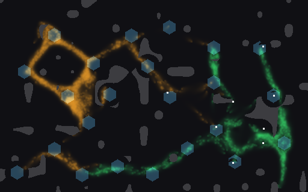
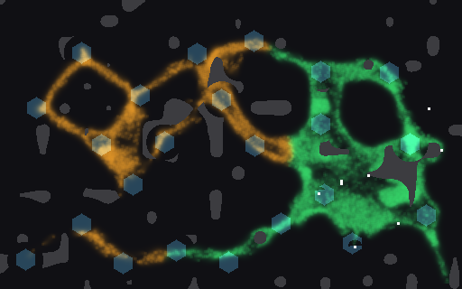
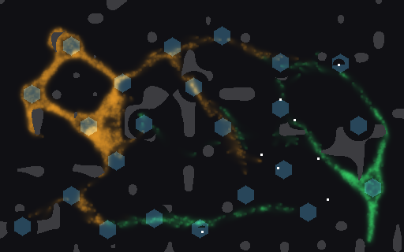
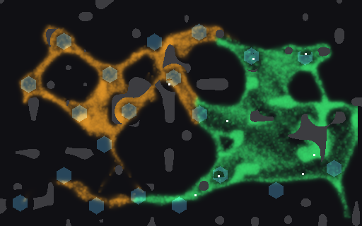

<title>Gardeners First Build</title>
<meta name="claude:viewport-fit-sides" content="cover">
<link rel="stylesheet" href="https://fonts.googleapis.com/css2?family=Space+Grotesk:wght@500;700&family=Inter:wght@400;600&family=JetBrains+Mono:wght@400&display=swap">
<style>
/* Layout: one reading column; pictures in a two-up grid, counts under each */
:root {
  --bg: #f5f6f3; --fg: #1d211d; --muted: #5d665e; --line: #d5dad3; --panel: #ffffff;
  --orange: #c9851c; --blue: #2b78d8; --green: #1f9a4f;
  --display: "Space Grotesk", "Helvetica Neue", Arial, sans-serif;
  --body: "Inter", "Helvetica Neue", Arial, sans-serif;
  --mono: "JetBrains Mono", ui-monospace, Menlo, monospace;
}
@media (prefers-color-scheme: dark) { :root:not([data-theme="light"]) {
  --bg: #121512; --fg: #e4e8e2; --muted: #9aa49b; --line: #2d332d; --panel: #1a1e1a;
  --orange: #e7a443; --blue: #5aa0f2; --green: #3fcf75; color-scheme: dark } }
:root[data-theme="dark"] {
  --bg: #121512; --fg: #e4e8e2; --muted: #9aa49b; --line: #2d332d; --panel: #1a1e1a;
  --orange: #e7a443; --blue: #5aa0f2; --green: #3fcf75; color-scheme: dark }
body { background: var(--bg); color: var(--fg); font: 15px/1.55 var(--body);
  padding-left: max(16px, env(safe-area-inset-left, 0px)); padding-right: max(16px, env(safe-area-inset-right, 0px)); padding-block: 28px 48px; }
main { max-width: 880px; margin: 0 auto; display: grid; gap: 28px; }
h1 { font: 700 30px/1.15 var(--display); margin: 0; text-wrap: balance; }
h2 { font: 700 19px/1.25 var(--display); margin: 0 0 8px; text-wrap: balance; }
p { margin: 0; max-width: 68ch; }
.lead { font-size: 16.5px; }
.muted { color: var(--muted); font-size: 13.5px; }
.wrap { overflow-x: auto; }
table { border-collapse: collapse; width: 100%; font-variant-numeric: tabular-nums; font-size: 14px; }
th, td { text-align: left; padding: 7px 10px; border-bottom: 1px solid var(--line); white-space: nowrap; }
th { font-weight: 600; color: var(--muted); font-size: 12.5px; letter-spacing: .03em; text-transform: uppercase; }
td.win { font-weight: 600; }
.grid { display: grid; grid-template-columns: repeat(auto-fit, minmax(300px, 1fr)); gap: 18px; }
figure { margin: 0; background: var(--panel); border: 1px solid var(--line); border-radius: 6px; padding: 10px; display: grid; gap: 8px; min-width: 0; }
figure img { width: 100%; height: auto; border-radius: 3px; image-rendering: pixelated; }
figcaption { font-size: 13.5px; display: grid; gap: 2px; }
.k { font-family: var(--mono); font-size: 12.5px; color: var(--muted); }
.o { color: var(--orange); font-weight: 600; } .g { color: var(--green); font-weight: 600; } .b { color: var(--blue); font-weight: 600; }
a { color: var(--blue); }
section { display: grid; gap: 10px; }
</style>
<main>
  <header style="display:grid;gap:10px">
    <h1>Gardeners: your soldiers grow your own mould</h1>
    <p class="lead">The first build of the shape you picked, on the CPU Larder world. Your mould (<span class="g">green</span>) starts on the larder crystal and the enemy (<span class="o">amber</span>) on the far one. Soldiers can lay your mould's roads, feed it and cut it. <b>Sowing food thinly along a walk grows your mould 13 times bigger than farming does, on 32 of 32 seeds.</b> But it doesn't shrink the enemy yet: the two bodies meet along one front and hold it.</p>
    <p class="muted">2,500 walkers a side at the start, growth on, 5 game minutes, 32 paired seeds. Shots and bites hit only the enemy. Earlier: <a href="https://claude.ai/artifact/H4Pd9hmsLHGgjqEciuNBmE">Mould body forms</a>.</p>
  </header>

  <section>
    <h2>Seed 1 at 2:30 and 5:00</h2>
    <p class="muted">White dots are soldiers, hexagons are crystals, grey is rock. Both games farm with every soldier; on the right, two of them also sow.</p>
    <div class="grid">
      <figure>
        <figcaption><span>Farm, 2:30</span><span class="k">yours 1,630 · enemy 2,263</span></figcaption></figure>
      <figure>
        <figcaption><span>Farm + two sowers, 2:30</span><span class="k">yours 13,452 · enemy 3,861</span></figcaption></figure>
      <figure>
        <figcaption><span>Farm, 5:00</span><span class="k">yours 1,227 · enemy 3,521 · share 0.946</span></figcaption></figure>
      <figure>
        <figcaption><span>Farm + two sowers, 5:00</span><span class="k">yours 24,508 · enemy 8,065 · share 0.952</span></figcaption></figure>
    </div>
  </section>

  <section>
    <h2>All 32 seeds</h2>
    <p class="muted">Share is the part of the crystal charge that your side ate (squad plus your mould). Walkers are means at 5:00. "vs farm" counts seeds higher / lower than the farm hand on the same seed.</p>
    <div class="wrap"><table>
      <tr><th>Hand</th><th>Share</th><th>Yours</th><th>Enemy</th><th>Your lead vs farm</th><th>Share vs farm</th></tr>
      <tr><td>idle</td><td>0.418</td><td>4,038</td><td>6,762</td><td>23 / 9</td><td>0 / 32</td></tr>
      <tr><td>random</td><td>0.761</td><td>18,700</td><td>10,876</td><td>29 / 3</td><td>0 / 32</td></tr>
      <tr><td>farm</td><td>0.946</td><td>1,723</td><td>5,369</td><td>–</td><td>–</td></tr>
      <tr><td>feed in one spot</td><td>0.936</td><td>2,052</td><td>5,864</td><td>18 / 14</td><td>13 / 19</td></tr>
      <tr><td>sow (one soldier)</td><td>0.953</td><td>18,629</td><td>7,211</td><td class="win">31 / 1</td><td>21 / 11</td></tr>
      <tr><td>sow (two soldiers)</td><td>0.952</td><td>23,023</td><td>7,281</td><td class="win">32 / 0</td><td>23 / 9</td></tr>
    </table></div>
  </section>

  <section>
    <h2>What it means</h2>
    <p>Gardening works as growing: your mould answers your soldiers in a way you can see. Farming alone starves it, because the squad clears its food. It doesn't fight yet. The enemy is a little bigger when you sow, since two soldiers stop shooting, and the share gain is small. The next step is contact: make the enemy seek your mould, so a big mould of yours is a threat it has to answer.</p>
  </section>
</main>
